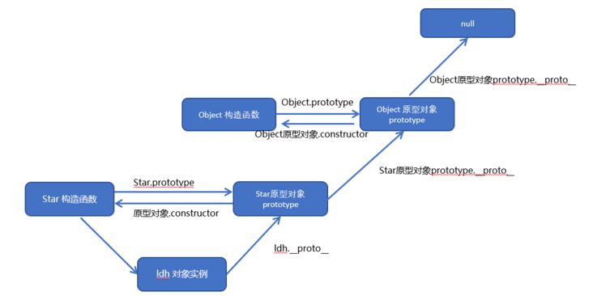

0804 函数 作用域 this 工厂对象 原型对象
Back Homepage
-
函数
- 函数也是一个对象
- 用于封装代码
- 创建函数对象(很少用): var func = new Function("console.log('hallo function')");
- 函数声明: function 函数名([参数1, ...]){}
- 匿名函数赋值: var func = function(){};
- 实参可以是对象也可以是函数, 传入的函数带有括号传入的是返回值, 不带括号传的是函数对象
-
作用域
-
全局作用域:
- 页面打开时创建
- 全局对象window, 代表一个浏览器窗口
- 创建的变量以及函数作为window的属性及方法保存
-
声明提前:
- 使用var声明, 会先执行声明, 但不赋值(undefined)
- function func(){} 的函数声明会最先创建
- var func = function(){}; 不会提前定义函数
-
函数作用域:
- var声明, 函数内有效, 每调用一次函数会新建一个函数作用域，函数外访问不到
- 函数作用域中可以访问全局变量
- 就近原则, 函数中想访问用window.var
- 函数作用域中也有声明提前
- 函数中不使用var声明的变量, 默认为window.var
-
this
- 每次调用函数时都会传入隐藏参数this
- 根据调用方式不同, this指向不同对象
- 以函数形式调用时, 指向window
- 以方法形式调用时, this指向调用方法的对象
- 以构造函数的形式调用时, this指向新创建的对象
- 使用call和apply时, this是传入的那个对象
-
class:工厂对象
- function func(){var obj = new Object(); return obj;}
- 构造函数和普通函数一样, 但习惯性首字母大写: function Func(name){this.name = name}var obj = new
Func("objName");
- 通过构造函数叫做类
- instanceof 可以用来判断某实例是否属于某一类
- 构造函数中的方法, 在构造函数外定义, this.func = func[全局中定义的]
-
原型对象 prototype
- 每创建一个函数, 解析器会添加一个prototype属性, 储存一个prototype的地址
- 作为普通函数调用没有作用
- 作为构造函数调用时, 所创建的对象有一个隐藏属性, 指向prototype
- 每个实例可以通过__proto__访问
- 类似于一个公共访问区域, 所有生成的对象都可以访问, 就可以在其中定义共有的内容
- Func.prototype.attr = xxx;
- 原型对象也有原型对象, 包含一些预定义的方法
- Object对象没有原型
